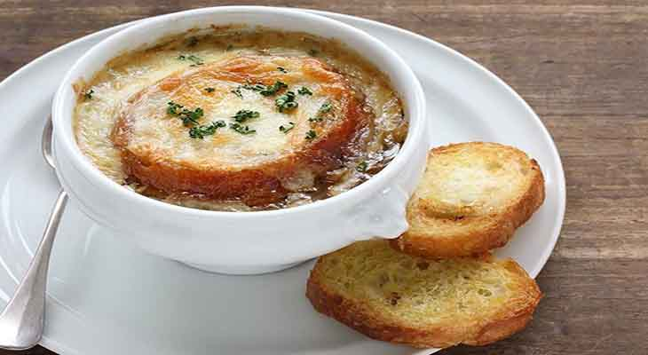
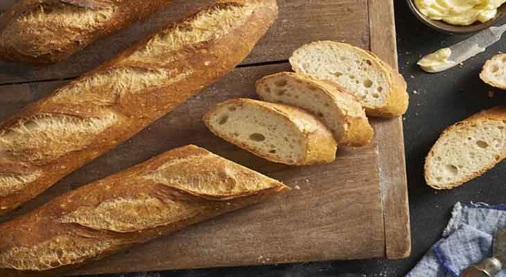
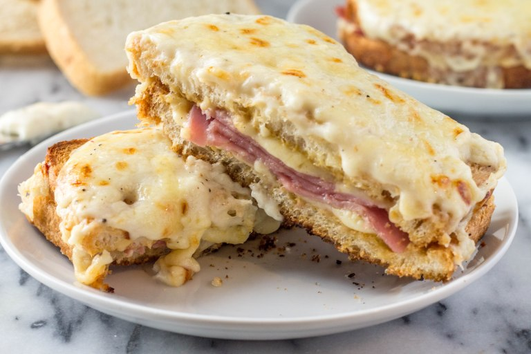
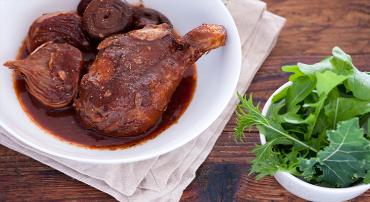
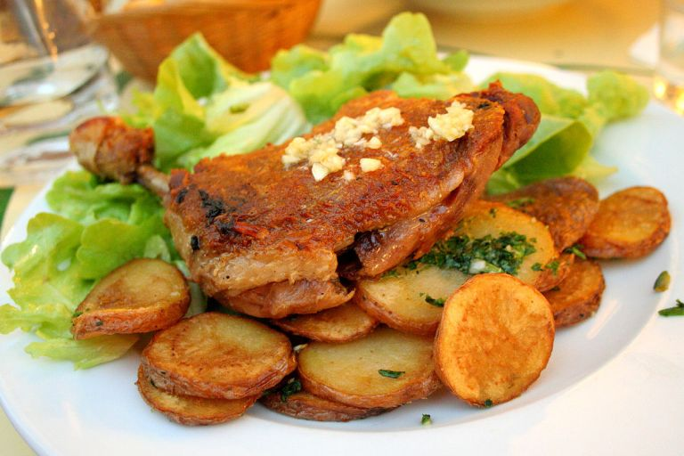

Top 5 Most Iconic Foods in France
by Jomari Ondap
Posted on March 28, 2018 at 01:05 PM
French cuisine consists of the cooking traditions and practices from France. In the 14th century Guillaume Tirel, a court chef is known as “Taillevent”, wrote Le Viandier, one of the earliest recipe collections of medieval France. During that time, French cuisine was heavily influenced by Italian cuisine. And here are the Top 5 Most Iconic Foods in France.
1. Soupe à l’Oignon Gratinée (Onion Soup)
The first in the list of Top 5 Most Iconic Foods of France is the famous French onion soup. French onion soup is a type of soup usually based on meat stock and onions and often served gratinéed with croutons and cheese on top or a large piece of bread. Although ancient in origin, the dish underwent a resurgence of popularity in the 1960s in the United States due to a greater interest in French cuisine. French onion soup is usually served as a starter.
2. Baguette
The next in the list of Top 5 Most Iconic Foods of France is the Baguette. The baguette is one of the true icons of the French culinary tradition. The perfect baguette, light with a crusty exterior and soft, slightly chewy interior, is as sublime a creation as has ever emerged from an oven. A simple long, thin crusty loaf of bread, the baguette is traditionally made with only water, salt, yeast, and flour.
3. Croque-Monsieur (Ham and Cheese Sandwich)
The third in the list of Top 5 Most Iconic Foods of France is the croque monsieur. Croque monsieur French for “mister crunch” is a baked or fried boiled ham and cheese sandwich. The dish originated in French cafés and bars as a quick snack. A croque madame is a version of the dish topped with a fried egg.
4. Coq au vin
The fourth in the list of Top 5 Most Iconic Foods of France is Coq au vin. This quintessential French food was popularised by Julia Child through her television show and book and seen as one of her signature dishes. It is a dish of chicken braised (pot roasted) with wine, mushrooms, salt pork or bacon (lardons), mushrooms, onion, often garlic and sometimes brandy. Although the name translates as ‘rooster or cock in wine’ – and braising is ideal for tougher birds – the recipe usually uses chicken or capon. A red Burgundy wine is typically used, although French regional variations exist using local wines.
5. Confit de canard
The Last in the list of Top 5 Most Iconic Foods of France is Confit de canard. Confit de canard is a tasty French dish of duck – although goose and pork can also be used – and is considered one of the finest French dishes. The meat is specially prepared using a centuries-old preserve and slow-cook process (confit), where the duck meat is marinated in salt, garlic, and thyme for up to 36 hours and then slow-cooked in its own fat at low temperatures (an alternative to deep-frying). It is typically served with confit roasted potatoes and garlic on the side. Today this French dish is served all over France, although it is considered a specialty of the Gascony region.
Categories
Recommended

Duis consectetur gravida
Nullam non magna lobortis, faucibus erat eu, consequat justo. Suspendisse commodo nibh odio.

Duis consectetur gravida
Nullam non magna lobortis, faucibus erat eu, consequat justo. Suspendisse commodo nibh odio.

Duis consectetur gravida
Nullam non magna lobortis, faucibus erat eu, consequat justo. Suspendisse commodo nibh odio.